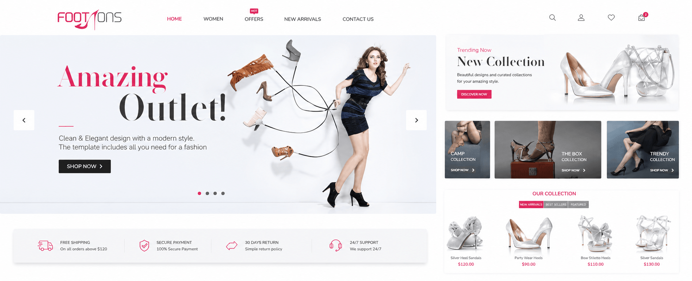
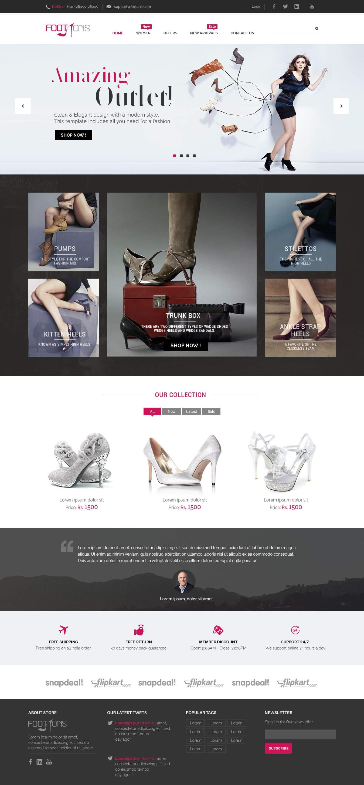

Heels, pumps, flats, ballerinas, juttis and more need distinct, recognisable routes into the catalogue.
← Back to workEvery style.
Footons · Fashion Commerce
Every style.
One confident step.

Project overview
A store full of choice.
A site built for discovery.
Footwear is chosen by mood, occasion, silhouette and comfort—not by one product list.
We translated Footons’ women’s range into a fashion-led storefront where statement imagery creates desire and clear categories make the next click effortless.
- Platform
- Online Store
- Audience
- Women
- Journey
- Discover to Shop
- Build
- Responsive Web
The organising idea
Lead with the look.
Follow with the choice.
Editorial campaign imagery gives the brand an immediate fashion point of view.
Category tiles, collection filters and product cards then turn inspiration into a practical shopping journey.
The commerce challenge
Make fashion expressive.
Keep shopping obvious.
Campaign-led presentation must coexist with prices, offers, product filters and direct calls to shop.
The shopping rhythm
See the mood.
Find the pair.
- 01
Inspire
A fashion campaign creates the first emotional reason to explore.
- 02
Orient
Named footwear styles turn browsing into familiar category choices.
- 03
Compare
Consistent product cards surface imagery, pricing and collection status.
- 04
Convert
Shop actions and service reassurance support a confident purchase.
The complete storefront
Campaign energy.
Catalogue discipline.
The long-form homepage moves from a high-impact fashion story to style categories, product collections, shopper reassurance and marketplace availability.
Footons commerce homepageCampaign, categories, collection and confidence signals

The storefront system
Made for fashion.
Structured for commerce.
Hero campaigns
Large seasonal stories keep the experience current and expressive.
Style categories
Recognisable silhouettes create intuitive ways into the assortment.
Collection filters
New, latest and sale states make high-intent browsing faster.
Trust layer
Shipping, returns, support and marketplace signals reduce purchase hesitation.
A distinct visual language
Strong contrast.
Sharper product focus.
Pink accents mark activity and offers, dark editorial fields frame campaign imagery, and white catalogue space lets individual shoes remain the visual hero.

The outcome
A fashion storefront.
Ready for every occasion.
A responsive experience that turns a varied women’s footwear range into a confident visual brand and a clear, usable shopping journey.
Stronger presence
Campaign imagery gives the online store a recognisable fashion character.
Faster discovery
Style-led categories help shoppers reach relevant products sooner.
Greater confidence
Consistent products and service information support purchase decisions.
Dress the moment.Find the pair.
Building a fashion experience?